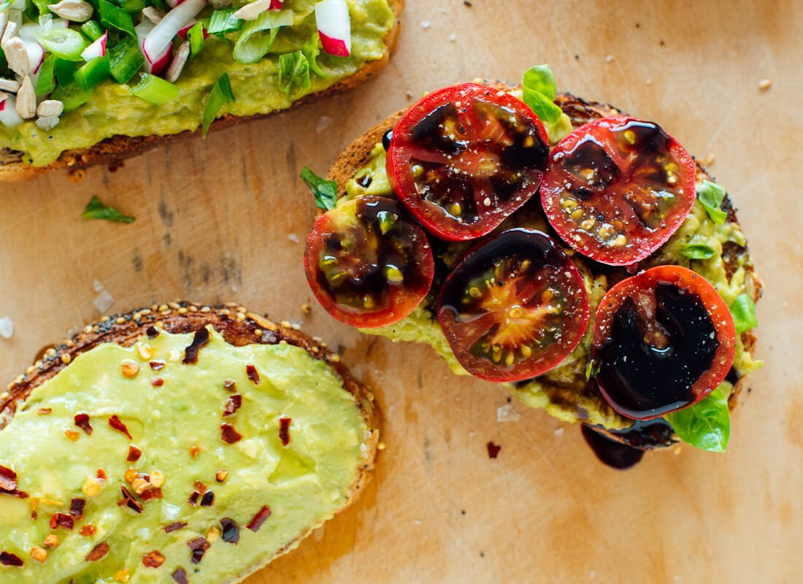

Avocado Toast (if you're feelin basic)
This one slaps... not as hard imo

Picture this: You've got those big a$$ sunglasses on, you're rocking mom jeans, a flannel, and some slip-on vans. Your best
friend, Becky, calls you and says that Tyler will be at the party tonight. "Oh my god, SHUT UP!" You can't wait to assemble
your outfit. But, you're hungry. Time for some avocado toast.
Ingredients
- 1 slice of bread (go for whole grain, it's good for ya)
- ½ ripe avocado
- Pinch of salt
- Optional: Tomato, egg, anything else you feel like topping it with
Steps
- Toast your slice of bread until golden and firm.
- Remove the pit from your avocado. Use a big spoon to scoop out the flesh. Put it in a bowl and mash it up with a fork until it’s as smooth as you like it. Mix in a pinch of salt (about ⅛ teaspoon) and add more to taste, if desired.
- Spread avocado on top of your toast. Enjoy as-is or top with any extras offered in this post (I highly recommend a light sprinkle of flaky sea salt, if you have it).